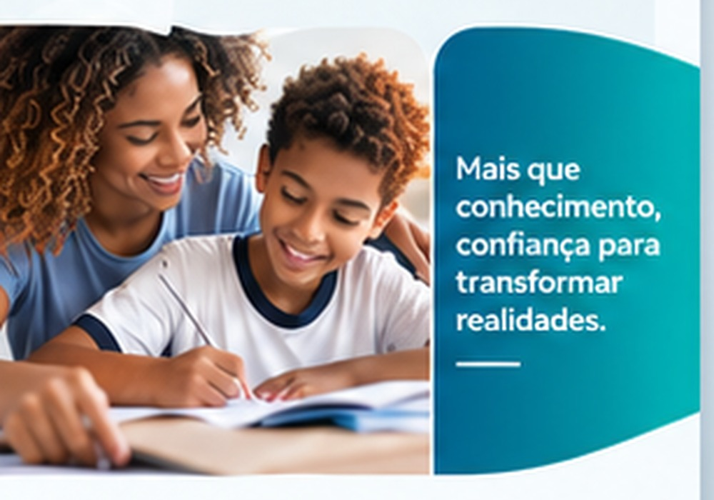
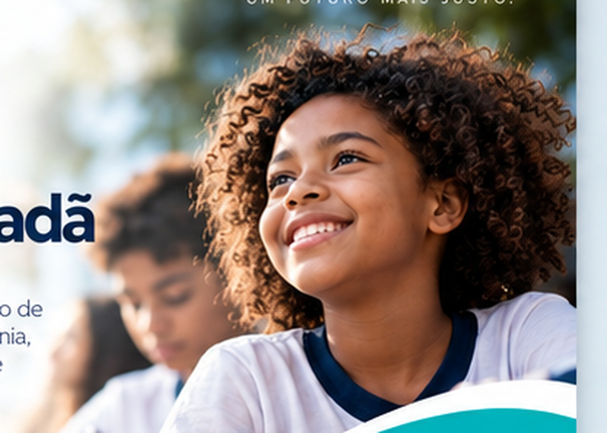

Projeto 01
Educação e Formação Cidadã
Trilhas de formação, cidadania, protagonismo e preparação para oportunidades futuras.
O Instituto Poder Social conecta educação, inclusão, desenvolvimento comunitário, empregabilidade e articulação institucional para transformar oportunidades em resultados sustentáveis.

Nossos eixos organizam iniciativas com foco em pessoas, territórios e oportunidades, respeitando a realidade de cada comunidade e os objetivos de cada parceria.
Formação complementar, cidadania, projetos de vida e desenvolvimento socioemocional.
Saiba mais →Promoção de direitos, acolhimento e ampliação do acesso a serviços essenciais.
Saiba mais →Qualificação, orientação profissional e conexão com oportunidades de trabalho e renda.
Saiba mais →Fortalecimento de redes locais, lideranças e iniciativas com protagonismo territorial.
Saiba mais →
Trilhas de formação, cidadania, protagonismo e preparação para oportunidades futuras.
Qualificação, competências socioemocionais, orientação e conexão com redes de oportunidade.
Fortalecimento de territórios, acesso a direitos e articulação de soluções locais.
Competências digitais, criatividade, inovação e preparação para o futuro do trabalho.

O Instituto organiza sua atuação a partir de planejamento, governança, monitoramento e articulação, com foco em conformidade e entrega de valor público.
Esta área foi preparada para centralizar documentos institucionais, políticas, relatórios, certidões e informações de governança à medida que forem formalmente publicados.
O Instituto Poder Social está aberto a cooperações com órgãos públicos, empresas, universidades e organizações da sociedade civil.